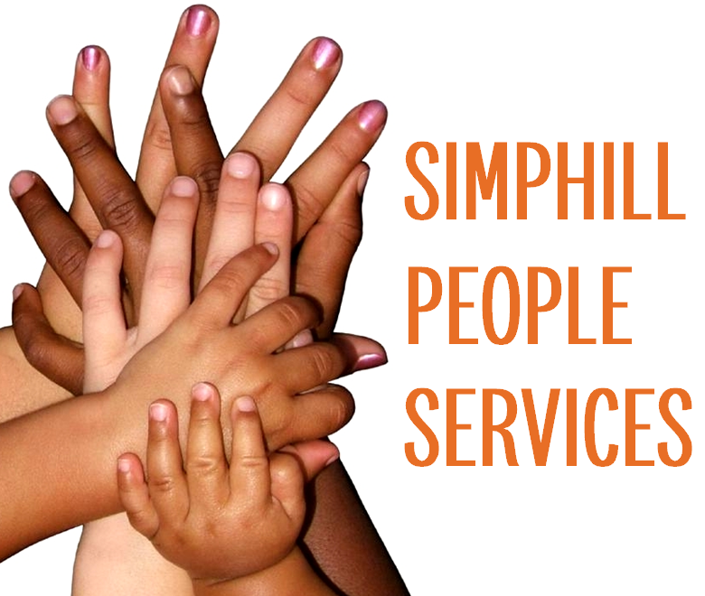

Employment Relations
Practical support to navigate workplace matters clearly, fairly and with confidence.

People services made simple
Simphill People Services provides clear, pragmatic support across employment relations, advocacy, leadership, people operations, strategy and organisational change.
What we do
Whether you need advice on a difficult employment matter or support through a wider transformation, Simphill brings practical, people-focused thinking to the table.
Practical support to navigate workplace matters clearly, fairly and with confidence.
Support and representation through challenging employment situations and conversations.
Helping leaders build confidence, capability and stronger people practices.
Improving the day-to-day systems, processes and practices that support your people.
Connecting people priorities to business goals with clear, workable plans.
People-centred support for organisational change, transformation and transition.
About Simphill
Simphill People Services works with organisations to make people challenges simpler to understand and easier to act on.
Our approach is practical and human: understand the issue, create clarity, and help people move forward with confidence.
Based in Auckland, supporting organisations across New Zealand.
Why Simphill
Get in touch
Connect with Simphill People Services on LinkedIn to start a conversation.